2 The Universe of Medical Images
Every medical image is the answer to the same question asked with different physics: send some form of energy into (or collect it from) the body — what comes back, and what does that tell us about the tissue it passed through? X-rays measure how much a beam is weakened on its way through you. MRI listens to hydrogen nuclei relaxing in a magnetic field. Ultrasound times echoes. PET watches you glow from the inside after an injection of radioactive sugar. Pathology skips the intact body entirely and puts a slice of it under glass.
This chapter is the atlas: every major modality, what it physically measures, what shape its data takes, what diagnoses are made from it, and how mature AI is for it today. Later chapters unpack each modality in depth; this one exists so that the rest of the book — and any reader, human or agent, dropped into an unfamiliar study type — has a map.
Think of each modality as defining a tensor. A chest X-ray is a single-channel 2D array, roughly \(3000 \times 3000\). A CT study is a 3D volume, \(512 \times 512 \times 300\) or more, where voxel values are physically calibrated. An MRI study is a set of 3D volumes — sequences — that behave like non-aligned, differently-contrasted channels. An echocardiogram is 2D+time. A pathology slide is a \(100{,}000 \times 100{,}000\) gigapixel pyramid. The tensor shape, the meaning of the values, and the metadata that travels with them (Chapter 3) determine which architectures and preprocessing apply — much of Chapter 7 follows directly from this chapter.
You already know these modalities clinically. What this chapter adds is the framing an AI system sees: which properties of each modality (dimensionality, calibration, operator dependence, acquisition variability) make it easy or hard for machine learning, and why AI progress has been so uneven across them.
2.1 How to read this atlas
Each family below gets four things: the signal (what physical quantity is measured), the shape (dimensionality and typical data size), the diagnoses (what clinical questions it answers), and the AI status (how far along the field is). The chapter closes with a master reference table, the engineer’s tensor cheat-sheet, and — because routing a study to the right expertise is the first thing an autonomous system must do — the agentic outlook.
2.2 Projection radiography
The oldest family, and still the highest-volume. A beam of X-ray photons passes through the body onto a detector; dense tissue (bone, metal, calcium) absorbs more, air absorbs almost nothing. The result is a two-dimensional projection: every structure along each ray is superimposed into one pixel. That superposition is the family’s defining limitation — a nodule can hide behind a rib — and the reason cross-sectional imaging was invented.
2.2.1 Radiography (X-ray)
Signal: X-ray attenuation, integrated along each ray. Shape: 2D, single channel, typically 2000–4000 pixels per side at 10–14 bits. Diagnoses: the chest X-ray alone screens for pneumonia, pneumothorax, effusions, cardiomegaly, nodules, tuberculosis, and line/tube placement; skeletal radiographs cover fractures, arthritis, and bone lesions; abdominal films catch obstruction and free air. It is the most-performed imaging exam on Earth — billions annually — which is why it anchors both the public-dataset landscape and the FDA-cleared product market, and why it gets this book’s flagship treatment in Chapter 11.
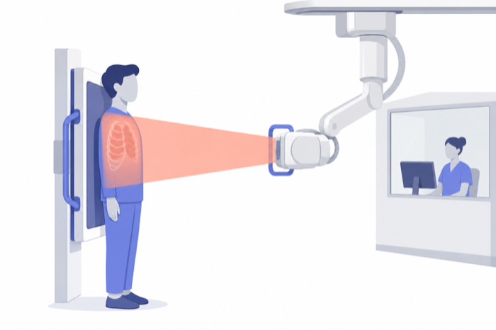
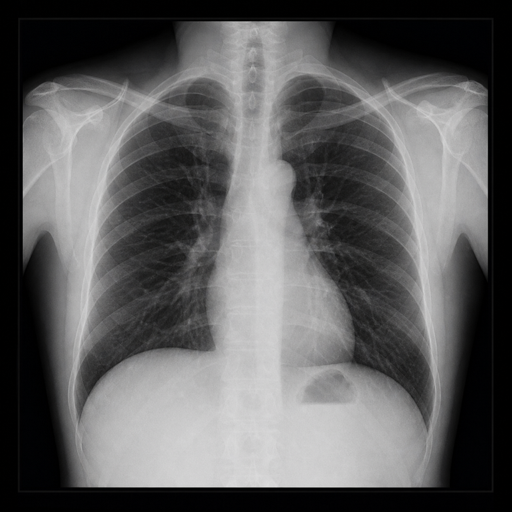
AI status: the most mature of any modality. Large labeled datasets exist, multi-finding classifiers are commodity, and cleared triage products are deployed at scale.
2.2.2 Mammography and digital breast tomosynthesis
Signal: low-energy X-ray attenuation through compressed breast tissue, tuned to maximize soft-tissue contrast — the differences that matter (a mass, a cluster of microcalcifications) are subtle. Shape: 2D at very high resolution (~4000 × 5000, 70–100 µm pixels); digital breast tomosynthesis (DBT) adds a limited sweep of angles reconstructed into a pseudo-3D stack of ~50–80 slices. Diagnoses: breast-cancer screening and diagnosis, reported in the standardized BI-RADS vocabulary.
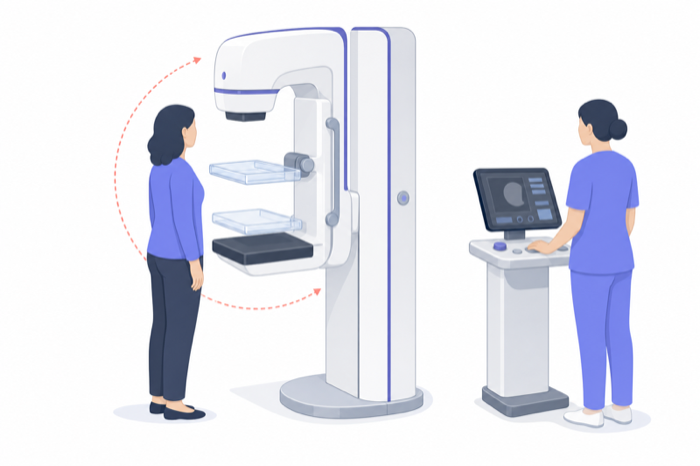
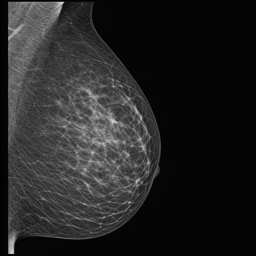
Mammography is unusual: it is a population screening modality, read in enormous volumes with a low prevalence of disease. That makes sensitivity/specificity trade-offs, double-reading economics, and risk-stratified screening intervals central — and it is why mammography hosts some of the strongest reader-study evidence for AI anywhere in medicine (Chapter 15).
2.2.3 Fluoroscopy and angiography
Signal: the same X-ray attenuation, but continuous — a live 2D+time video, usually with injected contrast tracing vessels or the GI tract. Shape: 2D+t, 512–1024 pixels per side, up to 30 frames/s. Uses: guiding interventions (catheters, stents, pacemaker leads), barium studies, joint injections. AI here is largely intra-procedural: vessel segmentation, device tracking, and radiation-dose reduction, sharing more DNA with the surgical-video world of Chapter 18 than with static radiography.
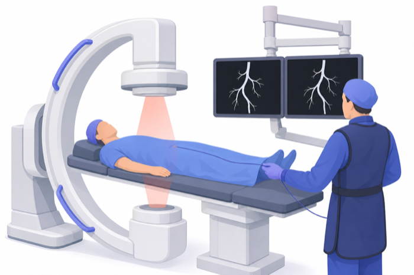
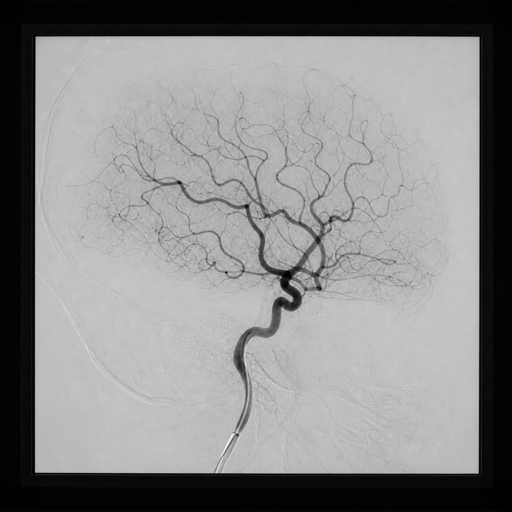
2.2.4 DEXA
Signal: attenuation at two X-ray energies, which lets the scanner separate bone from soft tissue and output a number — bone mineral density — rather than primarily a picture. Diagnoses: osteoporosis and fracture risk. DEXA earns its place in the atlas as the purest example of imaging-as-measurement, and because opportunistic screening — AI mining bone density or body composition from CT scans acquired for other reasons — is quietly becoming one of imaging AI’s most cost-effective applications (Chapter 20).
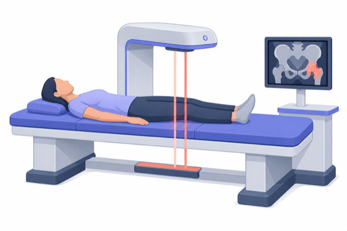
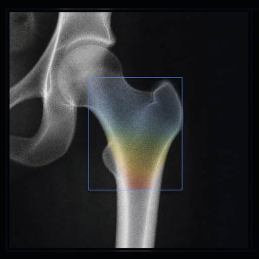
2.3 Cross-sectional imaging
The superposition problem is solved by acquiring many views and reconstructing a volume: instead of one shadow, a stack of slices. Cross-sectional modalities produce true 3D data, and with it the volumetric measurement, 3D segmentation, and multi-planar reconstruction that dominate modern imaging AI.
2.3.1 Computed tomography (CT)
Signal: X-ray attenuation again — but measured from hundreds of angles as the tube spins around the patient, then reconstructed into a volume where every voxel carries a calibrated Hounsfield unit (HU): water is 0, air is −1000, bone is +400 to +2000. That calibration is a gift to machine learning; a liver is roughly the same HU in Boston and Bangalore.
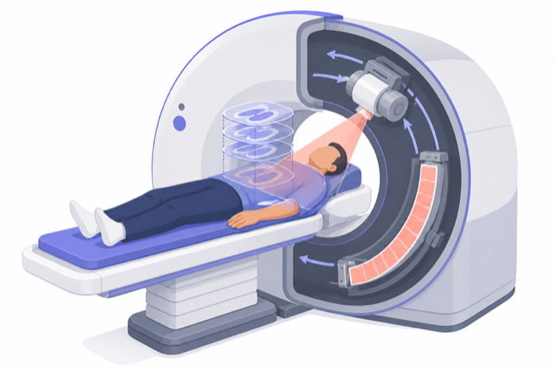
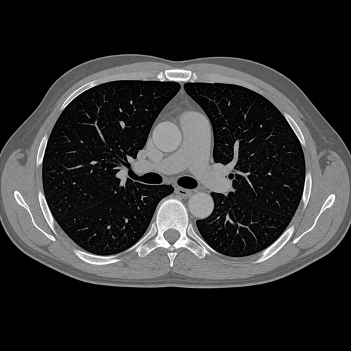
Shape: 3D, canonically 512 × 512 in-plane with sub-millimeter voxels and anywhere from 40 to 2000+ slices; cardiac and perfusion protocols add time (4D). Intravenous contrast creates phases (arterial, venous, delayed) — effectively a temporal channel axis that an AI system ignores at its peril: the same lesion looks different in every phase.
Diagnoses: the emergency workhorse — stroke, hemorrhage, pulmonary embolism, trauma, appendicitis — plus cancer detection, staging and response assessment, lung-cancer screening, coronary imaging, and surgical planning. AI status: very mature. Triage products for hemorrhage, stroke and PE are the commercial heart of radiology AI, and whole-body anatomical segmentation is now open-source commodity infrastructure (Chapter 12).
2.3.2 Magnetic resonance imaging (MRI)
Signal: no ionizing radiation at all. The patient lies in a strong magnetic field; hydrogen nuclei are tipped by radio-frequency pulses, and the scanner measures how they relax back — at rates that depend exquisitely on the tissue they sit in. By reordering the pulses — the sequence — the same anatomy renders with entirely different contrast: T1-weighted (anatomy, fat bright), T2-weighted (fluid bright), FLAIR (fluid suppressed, lesions conspicuous), diffusion-weighted (water mobility — the sequence that lights up acute stroke within minutes), gradient-echo (blood products), and dynamic contrast-enhanced series watching gadolinium wash in and out.
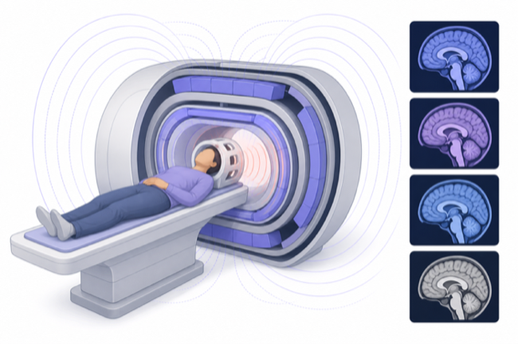
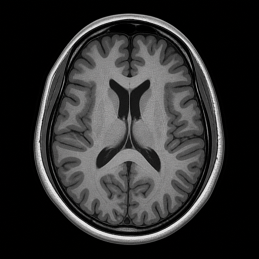
Shape: a study is a set of 3D volumes, one per sequence — think 4–12 misaligned, differently-contrasted, differently-resolved channels, often anisotropic (e.g., 0.5 mm in-plane but 5 mm between slices). Unlike CT, voxel intensities are not calibrated across scanners or even visits — the single most important fact about MRI for an ML practitioner, and the root of the domain-shift problems in Chapter 5.
Diagnoses: the definitive modality for brain and spine (tumors, MS, dementia workup, stroke characterization), musculoskeletal soft tissue, prostate (PI-RADS), liver lesions, cardiac function and scar, and high-risk breast screening. AI status: strong in research, harder in deployment — sequence variability across vendors and sites is the great confounder. MRI also hosts imaging AI’s most distinctive success: reconstruction — using learned priors to produce diagnostic images from far less raw data, cutting scan times dramatically (Chapter 13).
2.3.3 Nuclear medicine: PET and SPECT
Signal: emission rather than transmission. A radioactive tracer is injected and accumulates where its target biology is active; the scanner detects the photons the patient emits. The archetype is FDG-PET — fluorine-18-labeled glucose — which maps metabolic activity: most cancers, being metabolically greedy, glow. Voxels are quantitative (SUV, standardized uptake value), making PET a measurement instrument like DEXA, but in 3D.
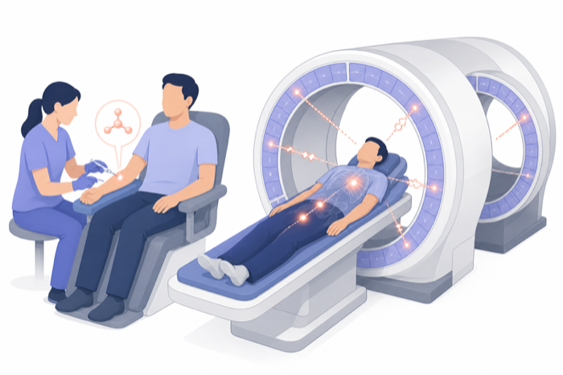
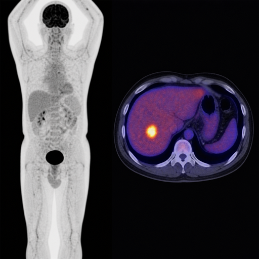
Shape: 3D but low-resolution (~4–6 mm voxels, 128–256 per side) and almost never alone: PET/CT and PET/MR acquire an anatomical volume in the same session, so the data is intrinsically multi-modal — a functional channel registered to an anatomical one. Diagnoses: cancer staging and treatment response above all; also cardiac viability, infection, and neurodegeneration (amyloid and tau imaging in dementia). SPECT, PET’s cheaper single-photon cousin, dominates cardiac perfusion. AI status: growing fast — lesion detection across whole-body PET, automated SUV quantification for trial endpoints, and dose/time-reduction reconstruction (Chapter 16).
2.4 Real-time imaging
Everything so far produces a study to be read after acquisition. This family is interpreted live, while the probe or scope is still in hand — which changes everything about how AI must integrate: the model’s user is the person acquiring the images, the latency budget is milliseconds, and acquisition quality itself becomes an AI target.
2.4.1 Ultrasound and echocardiography
Signal: high-frequency sound pulses; the machine times and weighs the echoes returning from tissue boundaries. Doppler processing adds a velocity channel — blood flow, in color. Shape: 2D+t video (~30–60 fps) from a hand-held probe whose position and angle are unrecorded and entirely operator-dependent; 3D/4D probes exist (obstetric and cardiac). The operator dependence is the field’s defining ML challenge: two sonographers produce different images of the same heart, and the “right” frame is a skill, not a coordinate.
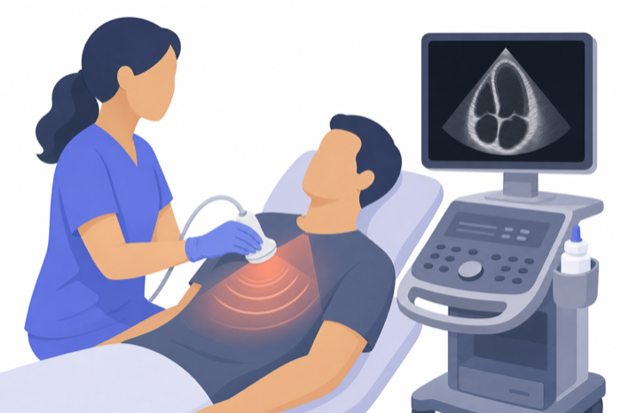
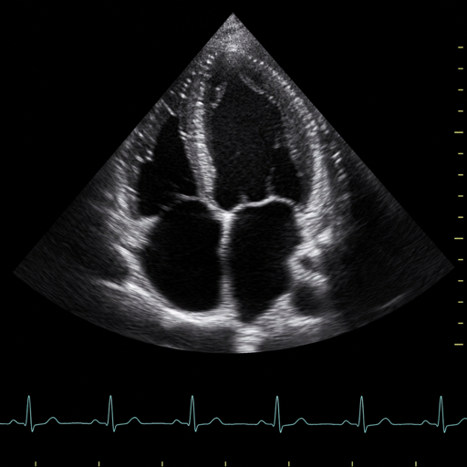
Diagnoses: ubiquitous — obstetric growth and anomaly screening, abdominal organs, thyroid, vascular flow, and above all echocardiography: chamber sizes, ejection fraction, and valve function, medicine’s front-line cardiac exam. Point-of-care ultrasound (POCUS) is pushing probes into ambulances, ERs, and low-resource settings — often into the hands of non-experts, which is exactly where AI guidance (coaching the operator to the right view, auto-measuring once there) earned one of its landmark FDA authorizations (Chapter 14).
2.4.2 Endoscopy
Signal: ordinary visible light, from a camera inside the GI tract (or airway, bladder, joint). Shape: 2D+t high-definition video. Diagnoses: colorectal-cancer screening via polyp detection and removal, upper-GI lesions, bleeding sources. Real-time polyp detection was among the first cleared live-video AI products in medicine, and the adenoma-detection-rate literature around it is some of the best evidence that imaging AI changes hard clinical outcomes.
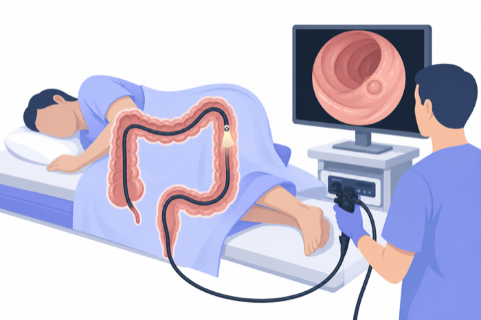
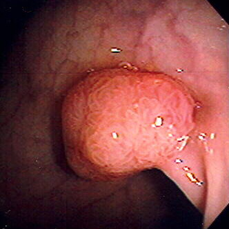
2.4.3 Surgical and interventional video
Signal: the laparoscope or robotic camera — visible light again, but now the video documents an activity, not just anatomy. Shape: 2D+t (sometimes stereo), hours long: a single case can exceed 100 GB, and “labels” are events in time (phases, instrument appearances, critical safety views) rather than regions in space. AI targets: workflow phase recognition, tool detection, safety-checkpoint verification, skill assessment, and automated documentation — the subject of Chapter 18, and the family closest to mainstream video understanding in computer vision.
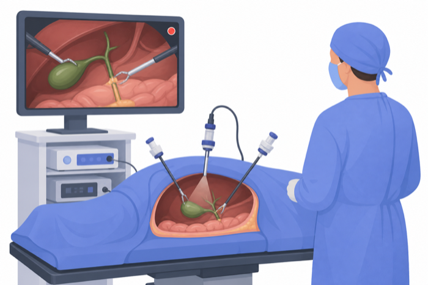
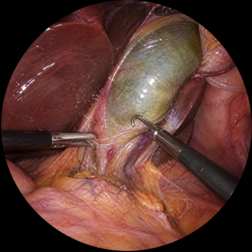
2.5 Ophthalmic imaging
The eye is the only place in the body where the microvasculature and central-nervous-system tissue can be photographed directly through a transparent window — which makes ophthalmic imaging disproportionately important to AI, historically and clinically.
2.5.1 Fundus photography
Signal: a visible-light color photograph of the retina. Shape: 2D RGB, ~2000–4000 pixels per side — the only major modality that looks like a natural image, which is why ImageNet-pretrained networks transferred so easily and why diabetic-retinopathy grading became deep learning’s first great medical success story. Diagnoses: diabetic retinopathy screening above all (the first autonomous — no-physician-in-the-loop — FDA authorization in medicine), plus glaucoma and macular degeneration. The emerging field of oculomics reads systemic health — cardiovascular risk, anemia, kidney disease — from the same photographs.
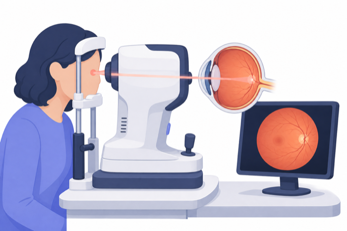
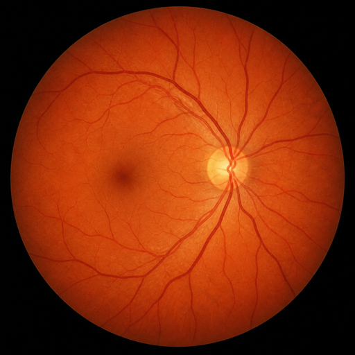
2.5.2 Optical coherence tomography (OCT)
Signal: low-coherence interferometry — light’s analog of ultrasound — resolving retinal depth at micron scale. Shape: 3D, a stack of cross-sectional B-scans revealing every retinal layer; OCT-angiography derives flow maps without dye. Diagnoses: macular degeneration and diabetic macular edema management (it gates injection therapy), glaucoma progression. OCT is the highest-volume 3D scan in all of medicine by study count — ophthalmology clinics run them like vital signs (Chapter 17).
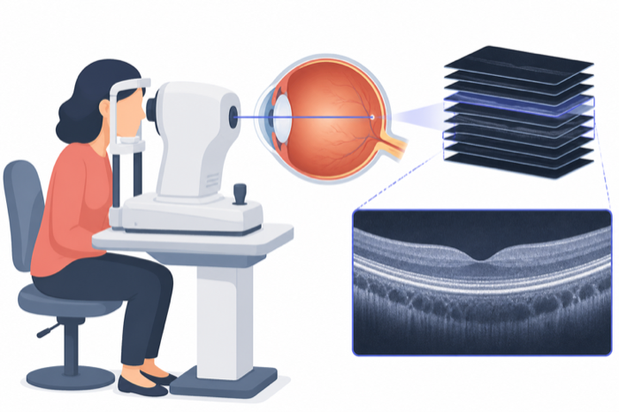
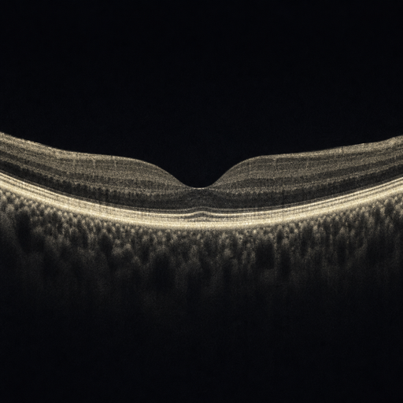
2.6 Microscopy: the laboratory image
Radiology images the intact patient; pathology images extracted tissue — and pathology’s verdict is usually the diagnosis of record against which every other modality’s suspicion is confirmed. Its digitization is the youngest and, by pixel count, the largest frontier in medical imaging.
2.6.1 Histopathology and whole-slide imaging
Signal: transmitted visible light through micron-thin, chemically stained tissue sections. H&E is the universal stain; immunohistochemistry (IHC) adds targeted molecular markers; special stains flag organisms and deposits. Shape: a scanned whole-slide image (WSI) is a pyramidal gigapixel file — 100,000 pixels per side at full resolution, several GB per slide, far too large for any network to ingest whole. The standard paradigm is tiling plus multiple-instance learning: the slide has one label, the hundreds of thousands of tiles do not — a weak-supervision structure that shaped an entire subfield and now underpins pathology’s powerful slide-level foundation models (Chapter 19).
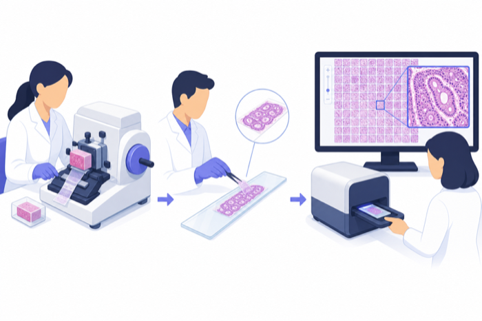
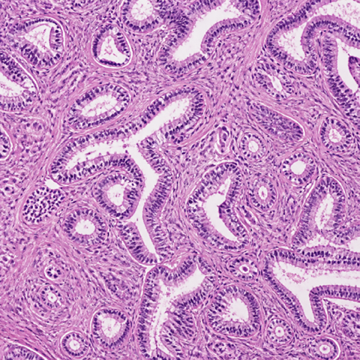
Diagnoses: cancer — its presence, type, grade, margins, and biomarkers — plus inflammatory, infectious, and degenerative disease across every organ.
2.6.2 Cytology and hematology
Individual cells rather than tissue architecture: Pap smears (cervical-cancer screening — home of some of the oldest automated-screening systems in medicine), fine-needle aspirates, and peripheral blood smears, where automated cell-classification is routine in modern hematology analyzers.
2.7 Dermatology, dental and maxillofacial
Dermatology: clinical photographs and dermoscopy (polarized close-up imaging of skin lesions) — 2D RGB natural images, screening for melanoma against a benign-lesion background. Consumer-facing apps make this the modality where regulation, bias across skin tones, and dataset ethics collide most publicly. Dental: intraoral radiographs and panoramic X-rays (caries, periodontal bone loss — high-volume, well-suited to detection AI) plus CBCT, a compact cone-beam CT for implant planning and endodontics. Both get their template treatment in Chapter 20.
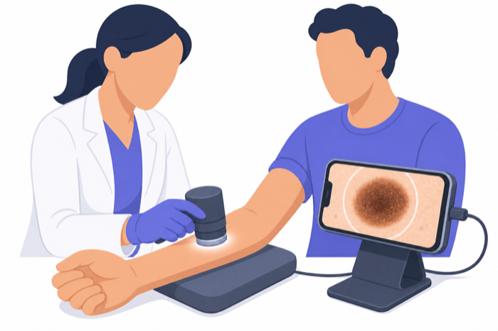
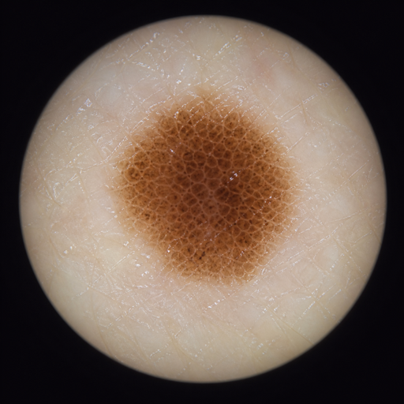
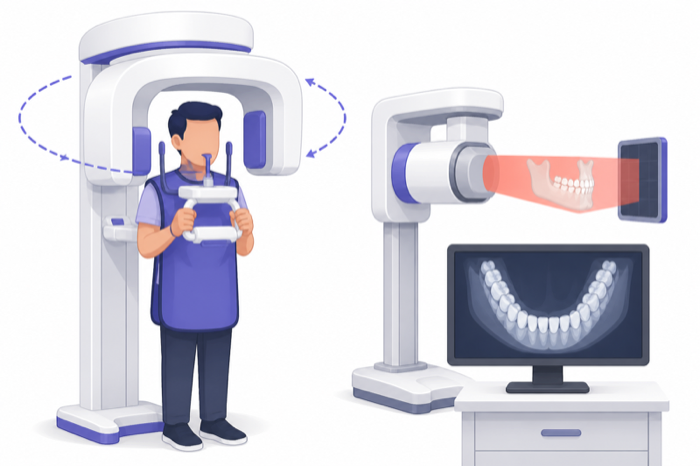
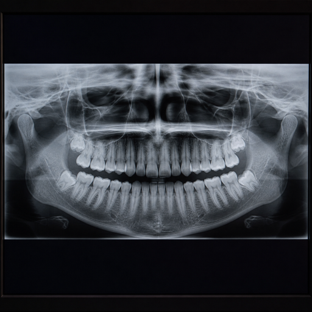
2.8 Emerging and adjacent
The atlas keeps growing. Photon-counting CT resolves the energy of individual X-ray photons, promising sharper images at lower dose with material decomposition. Portable low-field MRI wheels the magnet to the bedside, trading resolution for access — and leaning on AI reconstruction to close the quality gap. Photoacoustic imaging fires laser pulses and listens to the ultrasound that tissue emits in response. Hyperspectral and fluorescence-guided surgery give the operating camera channels human eyes lack. And at the boundary of the definition, waveform data like ECG is routinely rendered and analyzed as images — a reminder that “medical imaging” is a convention about tensors and clinical context as much as physics.
2.9 Dimensions, tensors, and files
| Modality | Typical tensor | Value semantics | Typical study size |
|---|---|---|---|
| Radiograph (CR/DX) | 1 × ~3000² | Relative attenuation | 10–30 MB |
| Mammogram / DBT | 1 × ~4000×5000 (× ~60 slices) | Relative attenuation | 50 MB–3 GB |
| CT | 512² × 40–2000 (+phases) | Calibrated (HU) | 30 MB–2 GB |
| MRI | 4–12 sequences × ~256³, misaligned | Uncalibrated | 100 MB–1 GB |
| PET(/CT) | ~200³ + CT volume | Calibrated (SUV) | 100–500 MB |
| Ultrasound / echo | ~50–200 clips × 2D+t (+Doppler) | Relative echo intensity | 100 MB–1 GB |
| Endoscopy / surgery video | 2D+t, minutes–hours | RGB | 1–100+ GB |
| Fundus | RGB ~3000² | RGB | 5–20 MB |
| OCT | ~100–500 B-scans × 500–1000² | Relative reflectance | 50 MB–1 GB |
| Pathology WSI | pyramidal ~100,000² RGB | Stain-dependent RGB | 0.5–5 GB/slide |
Three recurring axes deserve respect: calibration (HU and SUV mean something; MRI and ultrasound intensities do not), anisotropy (voxels are rarely cubes), and channels-that-aren’t-channels (MRI sequences and CT contrast phases are semantically channels but arrive misaligned and optional — real pipelines must handle missing ones).
2.10 The master modality × diagnosis table
| Modality | Physical signal | Shape | Flagship diagnoses | AI maturity |
|---|---|---|---|---|
| Radiography | X-ray transmission | 2D | Pneumonia, pneumothorax, fractures, TB, lines/tubes | ●●●●○ deployed at scale |
| Mammography/DBT | Low-energy X-ray | 2D/pseudo-3D | Breast cancer screening | ●●●●○ strong reader evidence |
| Fluoroscopy | X-ray video | 2D+t | Procedure guidance | ●●○○○ intra-procedural aids |
| DEXA | Dual-energy X-ray | Quantitative 2D | Osteoporosis | ●●○○○ + opportunistic CT |
| CT | Reconstructed attenuation | 3D/4D | Stroke, PE, hemorrhage, trauma, cancer staging, lung screening | ●●●●● commercial core |
| MRI | Nuclear relaxation | Multi-sequence 3D | Brain/spine disease, MSK, prostate, cardiac | ●●●○○ recon is the star |
| PET/SPECT | Tracer emission | 3D + anatomy | Cancer staging/response, perfusion, dementia | ●●●○○ quantification-led |
| Ultrasound/echo | Acoustic echoes | 2D+t (+Doppler) | Cardiac function, obstetrics, vascular | ●●●○○ guidance + automeasure |
| Endoscopy | Optical video | 2D+t | Polyp/lesion detection | ●●●●○ cleared live CADe |
| Surgical video | Optical video | 2D+t | Phase/safety/skill analysis | ●●○○○ research→product |
| Fundus | Optical photo | 2D RGB | Diabetic retinopathy, glaucoma | ●●●●● first autonomous clearance |
| OCT | Interferometry | 3D | AMD, DME, glaucoma | ●●●●○ layer analysis routine |
| Pathology WSI | Stained-light microscopy | Gigapixel 2D | Cancer diagnosis of record, grading, biomarkers | ●●●○○ foundation-model era |
| Dermoscopy | Optical photo | 2D RGB | Melanoma vs. benign | ●●●○○ consumer-facing tension |
| Dental/CBCT | X-ray / cone-beam | 2D / 3D | Caries, implants | ●●●○○ fast-growing |
2.11 The agentic outlook
For an autonomous system, this chapter is not background — it is a routing table. The first decision any imaging agent makes about a study is what am I looking at, and everything downstream (which models to call, which measurements matter, which report template applies, which findings are urgent) hangs off that answer. In principle the DICOM header answers it — modality, body part, protocol — but real-world metadata is famously dirty: mislabeled body parts, free-text study descriptions, protocol names that differ at every site. Robust agents therefore combine metadata with the image content itself, exactly the modality-and-anatomy scoring described throughout this atlas.
This routing is buildable today: weigh the DICOM modality tag, body part, and study-description keywords to pick a pipeline before any model runs — a chest radiograph routes to chest X-ray models, an RTSTRUCT to radiotherapy tooling. An agent that has internalized this chapter can extend that logic: recognize a contrast-phase mismatch, notice a missing MRI sequence before wasting an inference call, or refuse to run a 2D chest model on a CT scout view. Modality literacy is to imaging agents what anatomy is to medical students — the prerequisite everything else assumes.
Try it yourself
The fastest way to make this atlas concrete is to load one study from each family in a free viewer (the viewer landscape is mapped in Chapter 4; 3D Slicer handles everything below) and feel the differences:
- Get sample data. 3D Slicer’s built-in Sample Data module ships anonymized studies across modalities; public sources like the Imaging Data Commons and TCIA offer full DICOM studies to download.
- Load a radiograph vs. a CT. Open a chest X-ray: one 2D frame, window/level is nearly all the interaction there is. Now load a CT: scroll the stack, view the three orthogonal planes, and re-window between lung/soft-tissue/bone presets — calibrated Hounsfield units at work.
- Load an MRI study. Note that it arrives as multiple series — the sequences of this chapter — and that intensity windows that suit T1 make FLAIR unreadable: uncalibrated values, experienced firsthand.
- Formats: the same viewer opens DICOM, NIfTI, NRRD, MetaImage, and TIFF — a working tour of the format landscape coming up in Chapter 3.
2.12 Further reading
- The DICOM standard’s modality definitions (dicom.nema.org) — the controlled vocabulary behind every “CT”, “MR”, “US” in this chapter.
- Suetens, Fundamentals of Medical Imaging — the physics one level deeper.
- The modality-by-modality chapters of Parts III–IV of this book, which unpack every section above.